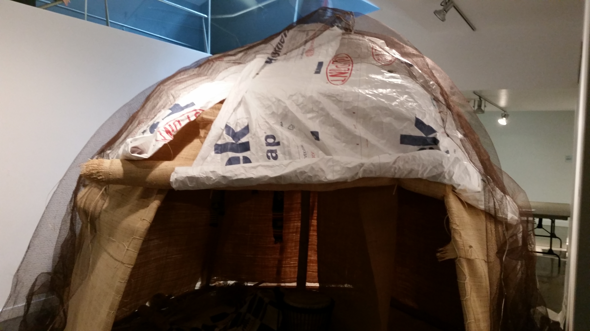

RAMESSES
Objective
To create a safe and durable emergency shelter kit for refugees and internally displaced persons in Sub-Saharan Africa
Introduction
Sub-Saharan Africa is home to upwards of 900 million people. According to most recent statistics from the UNHCR, there are nearly 8 million refugees and nearly 3.5 million internally displaced persons (IDPs) within Sub-Saharan Africa. These people have had to leave their place of origin due to political, economic, religious and natural catastrophe and they make up a population that is in dire need of shelter. In an effort to aid these people, RAMESSES I was developed. RAMESSES I is an acronym that stands for Reuse of Available Material, Energy, Structures and Supplies for Emergency and Shelter. Its goal was provide an answer to the refugee displacement that plagues Sub-Saharan Africa, and to provide an alternative to the currently existing shelters provided by the UN. While RAMESSES I involved many useful ideas that RAMESSES II has used as underlying principles (spherical shape, bamboo and other biodegradable materials), it was unfortunately destroyed in a rainstorm. RAMESSES II involves a design that focuses on a shelter that can provide a person living in it with integrity, but can also stand up to the harsh Sub-Saharan climate.
Our Design Goals are to create an emergency shelter that is ...
- Stable;
- Easy to assemble;
- Affordable;
- Biodegradable; and
- Comfortable
Frame Designs
The Basic Dome
Our basic reference design is the dome, which is very similar to the aqals that are popular around sub-Saharan Africa. The idea with this design was to recreate the success of the refugees with bamboo instead of their random assortment of sticks, and have an easy to make, mass producible shelter.
The Folding Fan
The Folding Fan was created specifically to achieve the goals of portability and ease of assembly. The central idea behind the design was to allow inhabitants to easily construct, deconstruct and transport the shelter by folding bamboo arches along two separate axes which lied along perpendicular diameters of a circular base.The design was rejected in a group vote due to the apparent lack of structural stability.
The Hex Gumdrop
The design at it’s earliest stages was a pentagonal teepee, which was created with the Hexagonal Gumdrop in mind. The idea for the design was originally based off of an umbrella. In order to enhance the stability of the tent, we added a center beam to hold three horizontal supports together, along with connecting the arches to one another at the top. We also added vertical supports so the horizontal support would be reinforced from falling falling downward.

The Truss Design
The truss design is particularly useful due to its strength and versatility. Using the component trusses for different functions would have been encouraged, as they could make up other larger buildings, ramp components or bridge supports. This design was ultimately not selected due to the complexity of construction relative to other designs.
Decision Matrix
The decision matrix is what allowed us to decide on a final design. Each of the parts of the matrix were criteria that we created in hopes to be able to properly judge each design. Sturdiness referred to how well the structure held up against 100 mile per hour wind in Solidworks. We gave this a max of 8 points because we felt sturdiness was the criteria that had the greatest weight and we wanted to improve upon this. Portability refers to the longest piece of bamboo tubing. This is due to how that would impact the kit hence either helping it be more portable or less portable. We gave this a weighting of 4 points maximum.
| Criteria | Basic Dome | Folding Fan | Hex Gumdrop | Truss Design |
|---|---|---|---|---|
| Sturdiness | 6 | 2 | 4 | 8 |
| Portability | 2 | 4 | 3 | 1 |
| Ease of Assembly | 3 | 2 | 2 | 4 |
| Packageable | 2 | 3 | 4 | 1 |
| Comfort | 2 | 4 | 3 | 1 |
| Weight of kit | 2 | 1.5 | 1 | 1 |
| Total Points | 17 | 16.5 | 17 | 16 |
Both the hexagonal gumdrop and basic dome had the same score in the decision matrix and it was decided that there would be a class vote and hexagonal gumdrop ended up winning the vote. This decision matrix really helped to solidify the pros and cons of each of the four different models and we were able to use that to judge everything.
Skin Designs
Learning from RAMESSES I, we decided to use Raffia as the main component of our skin. It is because Raffia is a commonly used material in Sub-saharan Africa, and hence can be repaired very easily.
However, in order to ensure that rainwater does not penetrate through the Raffia skin, we decided to put a layer of tyvek on top of the Raffia. To secure the Tyvek to the frame, we decided to install grommets at the top of each face along each arc of the frame, where the Tyvek faces overlap. The overlapping Tyvek at this point will provide additional reinforcement against forces exerted by wind and rain.
We also created a floor design so that the inhabitants of the shelter do not simply have a dirt floor to live and sleep on. We plan on using a sheet of nylon as the entire floor. When the shelter is being constructed, the nylon floor should be spread out on the ground first. Then, the central pole of bamboo supporting the shelter should be run through a hole in the center of the sheet. We planned to provide a small excess of nylon in each kit. This allows the floor to extend upwards and curve along the walls of raffia, on each side except for the entrance.
Construction
Beginning with the frame, we used the dimensions and scales we had determined beforehand to prepare the bamboo skeleton of the shelter. Our first step was to build a base that could hold up the frame.Our solution was cutting holes in the edges of the hexagonal base that could hold the ends of the support frames and allow them to stand on their own.

After inserting the support frames into their respective holes, we encountered another problem concerning the adjoining of the top of the center pole and crossings of the 6 arches. Our initial idea was to fit the bottom three crossings into the top of the center pole then secure the upper three with a tight lashing. However, we had failed to account for the width of the bamboo, which prevented us from fitting the crossings into the center pole.
After much consideration, we finally decided on joining the crossings and the center pole with two separate planks of plywood that would “sandwich” together the 6 crossings with the top of the center pole. Next, we applied dowels going through the two planks to secure the two pieces together, having lashed the planks together.
After we completed the construction of the frame, we had to apply the skin of theshelter. For our inner skin, we sewed the raffia mat onto the frame using the same string we used for the lashings to secure the skin in place. Sewing the mats in place would ensure that the mats were held in place and under normal weather conditions, wind would not be able to tear the mats off the frame.
Next, we placed the Tyvek layer on top of the raffia. To fit the Tyvek in place, we first had to measure out the faces of the hexagonal sides and then cut the Tyvek according to our measurements. This process included sewing together sheets of Tyvek with a sewing machine since the width of the Tyvek was only 6 feet, the exact width of each side of the base; however, we had to account for any errors in measurement and construction as well as include an overlap to latch the Tyvek to the frame.
Finally, after fitting the Tyvek to the frame, the final layer of the skin was the netting. We were able to attach the netting to the ground, though in reality, we plan to anchor the netting into the ground using rebar stakes.
Conclusion and Reflections
Although a final design, along with a modeled prototype, has been created, there are still further steps that must be taken in order to improve the design. From evaluation, information was gathered about the design that revealed advantages and disadvantages in the model. Considering this information is crucial to the development and improvement of this design, however, more information can be gathered from the deployment of the design in Sub-Saharan Africa. From that experiment, more accurate data can be gathered that could be used for more in-depth analysis and improvement. Since the design is not only based on practicality and direct efficiency but also cultural acceptance, the deployment of a prototype in Sub-Saharan Africa to be used by current refugees and provide accurate information on how well the design meets cultural criteria and overall shelter-related efficiency.